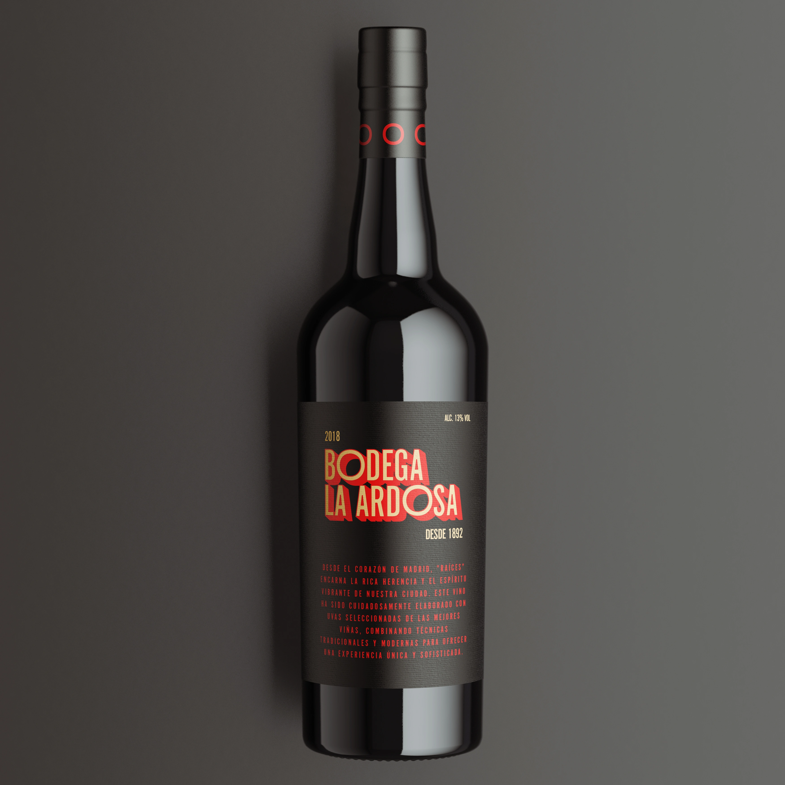
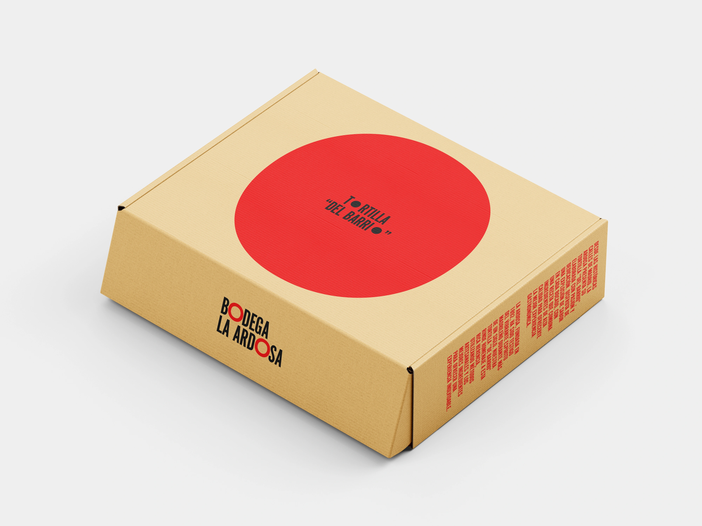
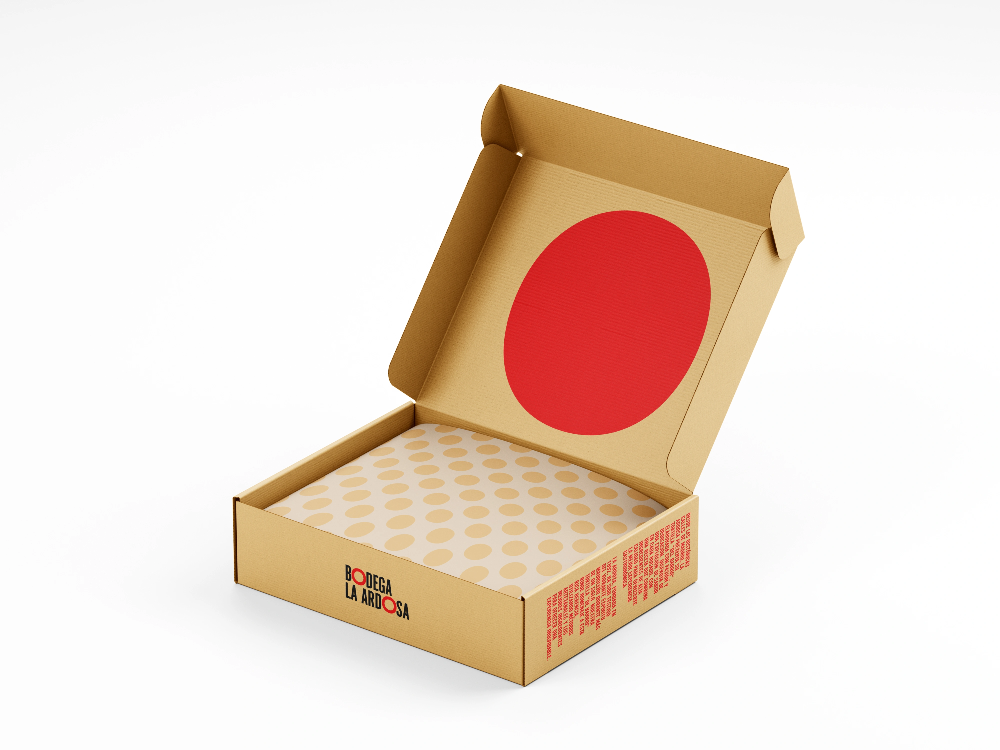
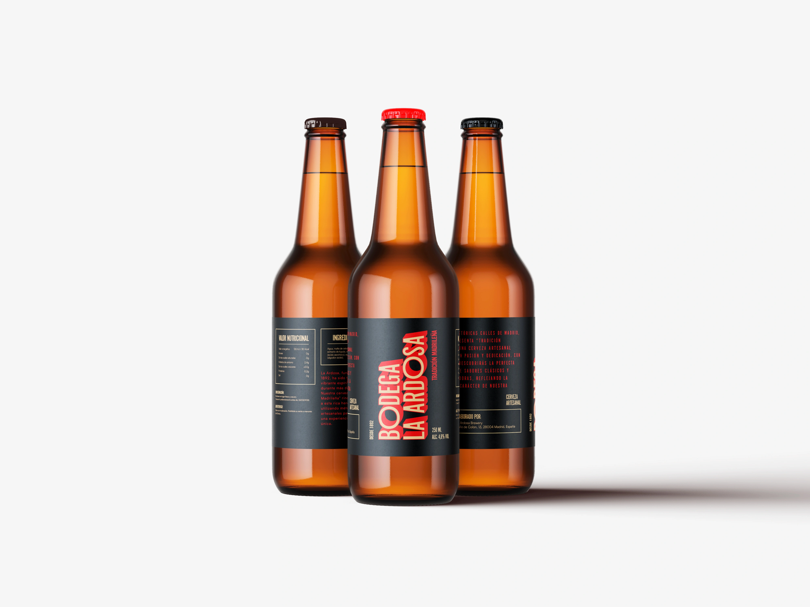

ARDOSA
ARDOSA es la identidad visual para unos de los bares más míticos de Madrid: LA BODEGA DE LA ARDOSA. Se ha rediseñado el logotipo, las etiquetas de sus botellas de cerveza y vino, así como diversos elementos gráficos para su comunicación tanto en formato físico como digital. El objetivo principal ha sido mantener la esencia tradicional del bar, al mismo tiempo que se le da un toque moderno y fresco que atraiga a una audiencia más joven.







